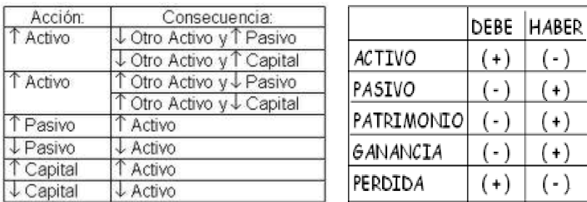

Representa la relación entre
ACTIVOS, PASIVOS Y CAPITAL
CONTABLE. De un lado están los
activos totales y del otro las
fuentes de financiamiento y los
derechos legales y económicos
sobre los activos (pasivo y capital
contable)
Clasificación de cuentas
Cuando la empresa alcanza cierto grado de desarrollo, es indispensable que el
listado de cuentas del catálogo se clasifique de acuerdo a la naturaleza o tipo
de movimiento que se le dará.
Dentro de la clasificación de cuentas se tiene
Cuentas de Balance: Activos, Pasivos y Capital
Son las que indican parte del patrimonio de la empresa, ya sea de bienes
adquiridos o deudas por la compra de bienes
De Resultados
Son las que describen los ingresos por ventas y salidas de dinero por
compras o gastos, para operar o asistir las transacciones de ventas
Ejemplos de variaciones por efecto de operaciones sin alterar la Ecuación Patrimonial

Ejemplo de partidas
El capital contable
Es la suma de los cargos y la suma de los abonos.
Dependiendo de su naturaleza pueden ser: movimientos deudores y
movimientos acreedores:
Movimiento deudor: es la suma de los cargos de una cuenta (debe)
Movimiento acreedor: se la llama así a la suma de los abonos de una cuenta
(haber)
Saldo
Se llama saldo a la diferencia
entre movimiento deudor y
acreedor. En virtud de que
existen dos clases de
movimientos, y que la
diferencia puede ser mayor en
uno y otro caso; pueden
también haber dos clases de
saldos: saldo deudor, saldo
acreedor
Saldo deudore
Una cuenta tendrá saldo
deudor cuando el importe
del movimiento del lado
deudor sea mayor que el
importe de la parte
acreedora, ejemplo:
El sistema de partida doble es el método o sistema de
registro de las operaciones, usado en la contabilidad, se
puede decir que es la base de la contabilidad.
La partida doble se sustenta por medio del sistema de cargo y
abono.
La contabilidad es de gran importancia porque todas las empresas tienen la necesidad de llevar un control de sus negociaciones mercantiles y financieras, y así poder obtener mayor productividad y aprovechamiento de su patrimonio.
Se deben observar los siguientes principios:
La partida doble se basa en que todo
hecho económico tiene origen en
otro hecho de igual valor pero de
naturaleza contraria, como por
ejemplo; cuando se presta dinero, el
que recibe debe y el que entrega
tiene. Las cosas no surgen de la
nada, cada valor es el resultado de
una acción u hecho económico.
No puede haber un movimiento que solo
afecte cuentas de una misma naturaleza.
Si una cuenta se afecta en su lado
positivo la otra se debe afectar en su
lado negativo. Cada cuenta debe tener
un nombre, un código y un valor
negativo u otro positivo. El valor
negativo corresponde a un crédito y el
valor positivo corresponde a un debito